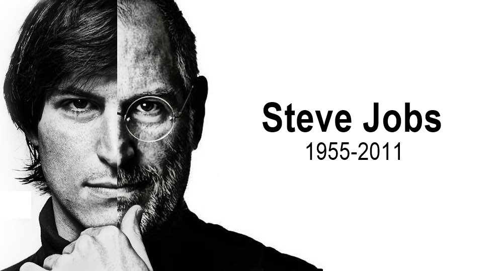

Steve Jobs
Cofundador de Apple y máximo accionista de The Walt Disney Company.

Más conocido como Steve Jobs, fue un empresario y magnate de los negocios en el sector informático y de la industria del entretenimiento estadounidense.
Línea del tiempo de Steve Jobs
- 1971 - Conoce a Steve Wozniak con quien más tarde se funda Apple.
- 1975 - Comienza la asistencia a las reuniones de la "Homebrew Computer Club", para los amantes de la computadora personal.
- 1976 - Jobs y Wozniak recaudan 1,750 dólares y construyen su primera computadora, la Apple I.
- 1976 - Funda Apple Computer Company con Wozniak y Ronald Wayne. Wayne vende su participación dos semanas después.
- 1976 - Jobs y Wozniak lanzan la Apple I por U$ 666.66, la primera computadora sencialla con una interfaz gráfica y una memoria interna de sólo lectura (ROM).
- 1977 - Apple se incorpora como Apple Computer Inc. y la nueva compañía compra la propiedad original.
- 1977 - Apple laza Apple II, la primera computadora personal utilizada ampliamente del mundo.
- 1980 - Se lanza la Apple III.
- 1980 - Apple se convierte en una empresa pública, el precio de las acciones salta de $22 a $29 dólares en su primer día de cotización.
- 1981 - Jobs participa en el desarrollo de la Macintosh.
- 1983 - Recluta a John Sculley como presidente y director general de Apple.
- 1983 - Anuncia "Lisa", la primera comptuadora controlada con un ratón. Es un fracaso en el mercado.
- 1984 - Apple anuncia la Macintosh con una campaña publicitaria durante el Super Bowl.
- 1985 - Jobs es expulsado de Apple después de un altercado con Sculley. Jobs renuncia y se lleva con él a cinco empleados de Apple.
- 1985 - Funda Next Inc. para desarrollar hardware y software de cómputo. Posteriormente, la compañía es rebautizada como Next Computer Inc.
- 1986 - Compra Pixar de George Lucas por menos de $10 millones de dólares. Posteriormente, cambia su nombre a Pixar Animation Studios.
- 1989 - Next introduce la NeXT Computer de $6,500 dólares, conocida también como The Cube. Viene con un monitor monocromático, y es un fracaso en el mercado.
- 1996 - Apple adquiere Next Computer por $427 millones de dólares; Jobs se convierte en asesor del president de Apple Gilbert F. Amelio.
- 1997 - Jobs se convierte en el CEO y president interino de Apple Computer Inc. después de que Amelio fuera despedido. El salario de Job es de $1 dólar.
- 1998 - Apple libera la iMac todo en uno, que vende un millón de unidades, reviviendo financieramente a la compañía y catapultando el precio de sus acciones en 400%. La iMac gana el Premio Dorado de la British Design and Art Direction. Vogue la proclama como “una de las propuestas de la moda más candentes de la primavera”, y Business Week dice que es “una de las imágenes más duraderas del siglo”.
- 1998 - Apple vuelve a ser rentable y establece récords de ingresos durante cuatro trimestres consecutivos.
- 2000 - Se elimina la palabra ‘Interino’ al puesto de Jobs.
- 2001 - Apple hace su primera incursión en el mercado electrónico de consumo con el lanzamiento del iPod, el reproductor portátil de MP3. (Vende más de 4.4 millones de iPods en el año fiscal 2004).
- 2003 - Jobs anuncias la iTunes Music Store, que vende canciones y álbumes codificados.
- 2004 - En agosto, Jobs es diagnosticado con cáncer de páncreas y es sometido a cirugía. Se recupera y vuelve al trabajo en septiembre.
- 2007 - Jobs anuncia el iPhone, uno de los primeros smartphones sin teclado, en Macworld Expo.
- 2008 - A finales de diciembre, Apple anuncia que Jobs no dará la conferencia estelar de Macworld Expo 2009 o que no asistirá al evento, despertando especulaciones sobre su salud.
- 2009 - A principios de enero, Jobs dice que su dramática pérdida de peso fue provocada por un desequilibrio hormonal. Dice que su condición no es un impedimento para desempeñarse como CEO. Una semana después, Jobs dice que se ausentará de Apple hasta junio debido a que su condición médica había cambiado. No revela su enfermedad. El director de Operaciones Tim Cook manejará las operaciones de Apple durante el periodo de recuperación de Jobs. Apple dice que Jobs participará en las principales decisiones estratégicas.
- Junio de 2009 - El Wall Street Journal reporta que Jobs fue sometido a un trasplante de hígado. Un hospital de Tennessee da a conocer un comunicado que confirma la operación.
- Junio de 2009 - Apple confirma que Jobs regresa a trabajar a finales de mes.
- Enero de 2010 - Apple anuncia la computadora tablet iPad, que es un éxito instantáneo y abre una nueva categoría de dispositivos de cómputo móviles.
- Septiembre de 2010 - Jobs aparece en público en San Francisco para anunciar el Apple TV set-to box de segunda generación de Apple, que transmite películas desde Internet o dispositivos móviles como el iPhone y el iPad directametne a las televisiones.
- Enero de 2011 - Apple anuncia que Jobs se toma un receso por razones médicas, sin especificar la razón de su ausencia o por cuánto tiempo será. Surgen dudas acerca de la gravedad de los problemas de salud de Jobs, y su impacto en las acciones, el desarrollo de productos y las operaciones de la compañía.
- Marzo de 2011 - Tomando un receso de su ausencia médica, Jobs aparece en un evento en San Francisco para presentar el iPad 2.
- Junio de 2011 - Mientras está de incapacidad, Jobs aparece en la Worldwide Developers Conference de San Francisco para presentar el iCloud y el iOS5. Pocos días después, Jobs aparece frene al Consejo Ciudadano de Cupertino con una propuesta para construir un campus tipo nave espacial en la ciudad.
- Agosto de 2011 - Jobs renunca como CEO de Apple, argumentando que “ya no puede realizar sus tareas y expectativas como CEO de Apple”. El director de Operaciones Tim Cook lo releva. Jobs seguirá participando en Apple como el presidente del consejo.
- 5 de octubre de 2011 - Jobs fallece en su casa de California a las 2 de la tarde a los 56 años, a consecuencia de un paro respiratorio derivado de las metástasis del cáncer de páncreas que le fue descubierto en 2004, por el que en 2009 había recibido un trasplante de hígado.
Para obtener mas información de este gran personaje visita: psworld México.